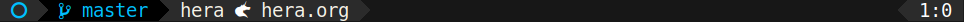
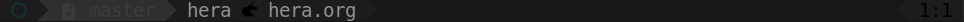
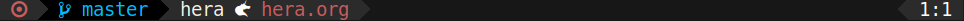
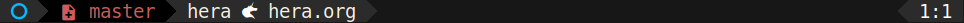

Eyeliner
Table of Contents
Makeup on your mode-line.
Eyeliner provides an API for customizing your mode-line using colors and icons.
active unmodified buffer 
inactive unmodified buffer (dimmed) 
modified buffer 
staged or unstaged changes 
Dependencies
- dash.el a modern list library
- magit for git status support
- spaceline provides the segemented mode-line support
- all-the-icons for multiple icon-font support
Quickstart
The quickest way to setup Eyeliner is to use straight.el's use-package support.
(use-package eyeliner :straight (eyeliner :type git :host github :repo "dustinlacewell/eyeliner") :config (require 'eyeliner) (eyeliner/install))
This should give you the default mode-line segments and colors.
Default Mode-line
The default mode-line contains the following segments:
buffer-modifieda circle icon indicating the buffer modification statebranch-iconan icon indicating there are staged or unstaged git changesbranch-namedisplays the name of the current git branchproject-namedisplays the name of the current Projectile projectmode-icondisplays an icon for the current major-modebuffer-namedisplays the name of the current buffer
User Guide
Using Eyeliner is centered around three main concepts:
Segmentswhich represent each part of your mode-lineStyleswhich are like dynamic faces that support dimmingIconswhich are unicode characters that support styling
This guide will cover everything you need to know!
Segments
Segments represent the different parts making up your mode-line. They are defined
using (eyeline/segment NAME BODY &rest PROPS). BODY should be a form that will be
evaluated to produce the content of the mode-line Segment:
(eyeliner/segment my/buffer-name-segment (buffer-name))
This creates a segment called my/buffer-name-segment which just returns the result of
(buffer-name). Segments can also return "propertized text" which can be used to
control the coloring and font:
(eyeliner/segment my/buffer-name-segment (propertize (buffer-name) 'face '(:foreground "blue" :family "monospace")))
It is important to note that a Segment's BODY is not evaluated when eyeliner/segment
is called, but each time the mode-line is rendered.
Dynamic Segments
A Segment's BODY can contain whatever logic is useful. For example, we can change
what face is used based on whether the buffer is modified:
(eyeliner/segment my/buffer-name-segment (let* ((buffer-state (format-mode-line "%*"))) (propertize (buffer-name) 'face (if (string= buffer-state "-") '(:foreground "white") '(:foreground "orange")))))
Another way Segments can be dynamic is by depending on the value of the active
binding which is t or nil depending on whether the buffer is active:
(eyeliner/segment my/buffer-name-segment (propertize (buffer-name) 'face (if active '(:foreground "white") '(:foreground "grey"))))
Later, we'll see how Styles make this easier.
Segment Properties
After the BODY, any number of PROPS can be passed to eyeliner/segment which have the
same effect as described in the Spaceline documentation. These can be used to tighten
the margins around a Segment, or to merge it with its neighbor:
(eyeliner/segment my/buffer-name-segment (buffer-name) :tight t :skip-alternate t)
Styles
Styles help you apply colors and other face properties to your Segments. Styles are
defined with (eyeliner/style NAME COLOR DARKNESS DESATURATION PROPS):
(eyeliner/style 'default "white") (eyeliner/style 'warning "red")
This creates two Styles called eyeliner/default-style and eyeliner/warning-style
which can be used to propertize text within your segments. Here is the
my/buffer-name-segment from before, now with Style support:
(eyeliner/segment my/buffer-name-segment (let* ((buffer-state (format-mode-line "%*"))) (if (string= buffer-state "-") (eyeliner/default-style (buffer-name)) (eyeliner/warning-style (buffer-name)))))
Each Style is a function which takes text you want to propertize. Additionally,
Styles will automatically propertize with a "dimmed" color when the active binding is
nil.
Controlling Dimming
You may want to control how Eyeliner dims your Styles for inactive buffers. Simply
use the DARKNESS and DESATURATION parameters:
(eyeliner/style 'warning "red" 25 25)
The values specify, from 0 to 100, what percent the brightness and saturation should be reduced to. In this case, each is reduced to just a quarter of the original.
The default dimming can bet set with eyeliner/default-darkness and
eyeliner/default-desaturation.
Other Face Properties
The final parameter to eyeliner/style, PROPS can be used to customize your Style
faces beyond just foreground color.
Icons
Icons are a lot like Styles but they don't accept any parameters and always return
the specified font-icon. You can define them with (eyeliner/icon NAME ICON-NAME
COLOR &optional DARKNESS DESATURATION PROPS DISPLAY):
(eyeliner/icon octoface "octoface" "green")
This defines an Icon named eyeliner/octoface-icon which when called will return that
font-icon propertized in a green face. Just like with Styles you can control dimming
with DARKNESS and DESATURATION and additional face properties with PROPS.
Display Properties
Unlike with Styles, Icons additionally support specifying Display Properties with
DISPLAY. This can be used to change the height of the Icon or raise it up and down:
(eyeliner/icon octoface "octoface" "green" nil nil nil '(:height 0.8 :raise -0.1))
Icon Names
Icons are sourced from all-the-icons.el so to find the name of an font icon you want to use you can look here:
Configuration
As the Quick Start mentioned, the easiest way to install and configure Eyeliner is to use straight.el
(use-package eyeliner :straight (eyeliner :type git :host github :repo "dustinlacewell/eyeliner") :config (require 'eyeliner) (eyeliner/install))
But you can use use-package without straight.el if you install Eyeliner to your
load-path some other way.
Designing Your Mode-line
Specifying what Segments make up your mode-line can be done in two different
ways. The first is by assigning lists containing the names of your Segments to
eyeliner/left-hand-segments and eyeliner/right-hand-segments before calling
(eyeliner/install):
(use-package eyeliner :straight (eyeliner :type git :host github :repo "dustinlacewell/eyeliner") :config (require 'eyeliner) (setq eyeliner/left-hand-segments '((eyeliner/buffer-modified) (eyeliner/branch-icon :skip-alternate t :tight-right t) (eyeliner/branch-name) (eyeliner/project-name :skip-alternate t) (eyeliner/mode-icon :skip-alternate t :tight t) (eyeliner/buffer-name)) eyeliner/right-hand-segments '(("%l:%c"))) (eyeliner/install))
Alternatively, you can pass these directly to (eyeliner/install):
(use-package eyeliner :straight (eyeliner :type git :host github :repo "dustinlacewell/eyeliner") :config (require 'eyeliner) (eyeliner/install '((eyeliner/buffer-modified) (eyeliner/branch-icon :skip-alternate t :tight-right t) (eyeliner/branch-name) (eyeliner/project-name :skip-alternate t) (eyeliner/mode-icon :skip-alternate t :tight t) (eyeliner/buffer-name)) '(("%l:%c"))))
Any Segment properties specified here will override those defined on the Segment itself. Refer to the Spaceline documentation to learn aobut them.
Customizing Built-In Segment Colors
Eyeliner comes with a number of default Segments to get you started. They all utilize some default colors which you can customize:
eyeliner/warm-colorfor when something might need attending toeyeliner/cool-colorfor when something is A-OKeyeliner/plain-colora neutral color for other situations
To customize these, simply assign a color to them with setq BEFORE (!) you load the
library. This can be done using the :init section of a (use-package) call:
(use-package eyeliner :straight (eyeliner :type git :host github :repo "dustinlacewell/eyeliner") :init (setq eyeliner/warm-color "salmon") (setq eyeliner/cool-color "violet") (setq eyeliner/plain-color "yellow") :config (require 'eyeliner) (eyeliner/install))
Built-In Segments
buffer-modified
- Buffer modified:
circle-oicon ineyeliner/cool-color - Buffer unmodified:
dot-circle-oicon ineyeliner/warm-color
buffer-name
- Buffer modified: the buffer name in
eyeliner/plain-color - Buffer unmodified: the buffer name in
eyeliner/warm-color
branch-icon
- No staged or unstaged changes:
git-branchicon ineyeliner/cool-color - Staged or unstaged changes:
diff-addedicon ineyeliner/warm-color
branch-name
- No staged or unstaged changes: the branch name in
eyeliner/cool-color - Staged or unstaged changes: the branch name in
eyeliner/warm-color
project-name
(projectile-project-name) in eyeliner/plain-color
mode-icon
Major-mode relevant icon in eyeliner/plain-color